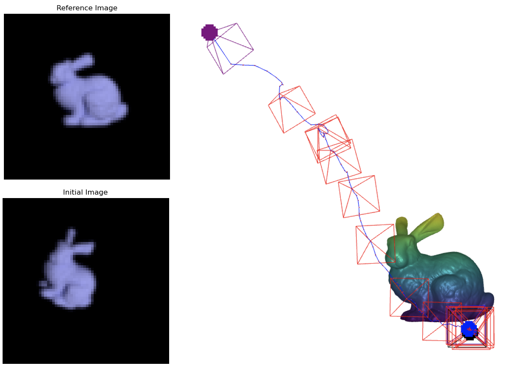
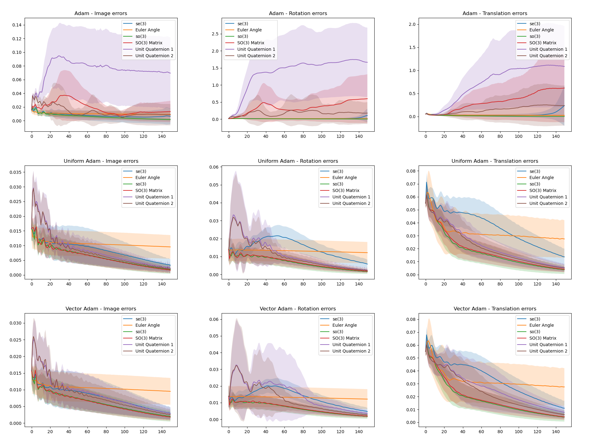

class: center, middle, inverse # Camera Pose Estimation with Mitsuba 3 --- .left-column[ ## Camera parameters ] .right-column[ When projecting the 3D scene into a 2D image, the transformation usually can be devided into two parts: - extrinsic parameters Such as location and orientation. - intrinsic parameters Such as focal length, aperture, field-of-view, resolution, etc. In this project, extrinsic parameters are focused, called camepra poses in brief. <!-- <img src="images/IC_logo2.jpg" style="width:150px;" /> --> <!--  --> ] --- .left-column[ ## Camera parameters ## Applications ] .right-column[ - In the rendering process, camera poses are used to decide the image contents in the scene. - In the inverse rendering process, camera poses can be estimated by minimizing the difference between renderred image and reference image. - In reconstruction tasks, camera poses are prerequisites for subsequential works. - ... .center[] ] --- .left-column[ ## Camera parameters ## Applications ## Main goals ] .right-column[ - Explore different camera pose parameterizations. - Euler angles with translations. - Rotation group SO(3) and its Lie algebra so(3) with translations. - Unit quaternions with translations. - Rigid body transformation group SE(3) and its Lie algebra se(3). - Verify their performance. - Matrix optimization. - Camera optimization. - Shape reconstruction with camera optimization. ] --- class: center, middle, inverse ## How to represent camera poses in Mitsuba 3? --- name: how .left-column[ ## Camera Poses ### - Overview ] .right-column[ In Mitsuba 3, the initial position of camera is at (0,0,0). The viewing direction is (0,0,1). The upward direction is (0,1,0). The left direction is (1,0,0). When camera is at the initial pose, in Mitsuba 3, the sensor's .red[to_world] matrix is a 4x4 identity matrix. To get other camera poses, we can apply .red[transformations] to the initial to_world parameter. In other word, the to_world parameter, the 4x4 matrix, represents the transformation. This project explores different methods to represent this transformation. ] --- name: how .left-column[ ## Camera Poses ### - Overview ] .right-column[ Basic Transformations for cameras in a 3D scene: - .green[Translation] <p>$$\begin{bmatrix} {1}&{0}&{0}&{a}\\ {0}&{1}&{0}&{b}\\ {0}&{0}&{1}&{c}\\ {0}&{0}&{0}&{1}\\ \end{bmatrix} \begin{bmatrix} {0}\\ {0}\\ {0}\\ {1}\\ \end{bmatrix} = \begin{bmatrix} {a}\\ {b}\\ {c}\\ {1}\\ \end{bmatrix} $$ </p> - .green[Rotation] <p> $$\begin{bmatrix} \begin{array}{c|l} {R}&{0}\\ \hline {0}&{1}\\ \end{array} \end{bmatrix} v = v' \\ R \in \mathbb{R}^{3\times 3}, R R^T = 1, det(R) = 1 $$ </p> The following introduced methods are based on these two basic transformation. It's Mainly focused on different parameterizations of the rotation matrix and how to use these parameterizations for optimization tasks. ] --- .left-column[ ## Camera Poses ### - Overview ### - Euler angles ] .right-column[ Euler angle is a common way for representing rotation. .center[<img src="./images/Euler2a.gif" width="200" height="200">] Pros: - Easy to understand and easy to represent in Mitsuba 3 by calling function .red[rotate]. And it represents rotation in 3D space without constraints. Cons: - May cause the .red[gimbal lock] problem. - Bad performance in optimization tasks. .footnote[Animation above comes from [Wiki.](https://en.wikipedia.org/wiki/Euler_angles)] ] --- .left-column[ ## Camera Poses ### - Overview ### - Euler angles ### - so(3) ] .right-column[ The rotation matrix belongs to the smooth manifold Lie Group SO(3), which is a topological space that locally resembles linear space. The .red[Lie algebra] of the Lie group is the tangent space around the .red[identity] element. Every element in the Lie algebra can be .red[exactly] mapped into a transformation in the group. The Lie algebra so(3), which are 3x3 skew-symmetric matrices, can be generated with 3D vectors. <p> $$\small \omega = [\omega_1 , \omega_2 , \omega_3 ]\in \mathbb{R}^3, \omega_{x} \in so(3)$$ $$\small \omega_{x} = \omega_1 \begin{bmatrix} {0}&{0}&{0}\\ {0}&{0}&{-1}\\ {0}&{1}&{0}\\ \end{bmatrix} + \omega_2 \begin{bmatrix} {0}&{0}&{1}\\ {0}&{0}&{0}\\ {-1}&{0}&{0}\\ \end{bmatrix} + \omega_3 \begin{bmatrix} {0}&{-1}&{0}\\ {1}&{0}&{0}\\ {0}&{0}&{0}\\ \end{bmatrix}$$ </p> The direction of the vector is the .red[axis] while the norm of the vector is the rotation .red[angle]. ] --- .left-column[ ## Camera Poses ### - Overview ### - Euler angles ### - so(3) ] .right-column[ .center[] Then, we apply .red[exponential map] to the Lie algebra to obtain the rotation matrix while apply .red[log map] to the Lie group to obtain the Lie algebra..red[*] <p> $$\small R = exp(\omega_x) = I + \frac{sin \theta}{\theta} w_x + \frac{1-cos \theta}{\theta ^2} w_x^2 $$ $$\small \theta = arccos(\frac{tr(R)-1}{2}), \small \omega_x = ln(R) = \frac{\theta}{2 sin \theta}(R - R^T) $$ </p> Thus, we can directly use the vector of so(3) for optimization. .footnote[.red[*]Reference: [Ethan Eade](https://ethaneade.com/lie.pdf)] ] --- .left-column[ ## Camera Poses ### - Overview ### - Euler angles ### - so(3) ### - SO(3) ] .right-column[ Rotation matrices are straight-forward for transformations. <p> $$\begin{bmatrix} \begin{array}{c|l} {R}&{0}\\ \hline {0}&{1}\\ \end{array} \end{bmatrix} v = v' \\ R \in \mathbb{R}^{3\times 3}, R R^T = 1, det(R) = 1 $$ </p> However, if we want to use this parameterization for optimization tasks, we need to satisfy the .red[constraints]. .red[Retraction] method: exponential map. .red[Projection*]: <p>$$ Proj_X(V) = X skew(X^T V) = X \frac{X^T V - V^T X}{2}$$</p> .footnote[.red[*]Reference: [Nicolas Boumal](https://www.nicolasboumal.net/book/IntroOptimManifolds_Boumal_2023.pdf)] ] --- .left-column[ ## Camera Poses ### - Overview ### - Euler angles ### - so(3) ### - SO(3) ] .right-column[ Given Euclidean gradient V at rotation matrix X, the new rotation matrix X' after taking a step: <p>$$ X' = X\cdot exp(Proj_{Identity}(X^T V))\\ = X\cdot exp(\frac{X^T V - V^T X}{2})$$ </p> .center[] ] --- .left-column[ ## Camera Poses ### - Overview ### - Euler angles ### - so(3) ### - SO(3) ### - Unit quaternions ] .right-column[ Unit quaternions represent rotations in 3D space with 4 elements including 1 real part and 3 imaginary parts: <p> $$h = \omega + xi + yj + zk \\ \omega,x,y,z \in \mathbb{R}, \omega^2+x^2+y^2+z^2 = 1 $$ </p> Optimization with unit quaternions is constrained that the norm of parameter should always be 1. With this constraint, there are two different ways for retraction. ] --- .left-column[ ## Camera Poses ### - Overview ### - Euler angles ### - so(3) ### - SO(3) ### - Unit quaternions ### - se(3) ] .right-column[ Similar to SO(3) group, SE(3) is also a Lie group with its Lie algebra. <p> $$\begin{bmatrix} R & t \\ 0 & 1 \end{bmatrix} \in SE(3)$$ </p> The Lie algebra can be generated by 6D vectors, because rotation has 3 DoF and translation has 3 DoF. The vector of Lie algebra also can be exactly mapped to the Lie group by .red[exponential map*]: <p> $$\small \begin{split}\small &\small u,\omega \in \mathbb{R}^3\\ &\small \theta = \sqrt{\omega^{T}\omega}\\ &\small R = I + \frac{sin\theta}{\theta} \omega_x + \frac{1-cos \theta}{\theta^2} \omega_x^2\\ &\small V = I + \frac{1-cos \theta}{\theta^2} \omega_x + \frac{\theta - sin \theta}{\theta^3} \omega_x^2\\ &\small exp \begin{pmatrix} u \\ \omega \end{pmatrix} = \begin{pmatrix} R & Vu \\ 0 & 1 \end{pmatrix} \end{split} $$ </p> .footnote[.red[*]Reference: [Ethan Eade](https://ethaneade.com/lie.pdf)] ] --- class: center, middle, inverse ## Experiments and results --- .left-column[ ## Experiment ### - Optimizer ] .right-column[ The experiments are mainly based on Adam optimizers: - .green[Original Adam] .small[Adam calculates the momentum for each parameter and adjusts learning rates individually, aiming to optimize parameters efficiently.] - .green[Uniform Adam] .small[By taking the .red[maximum] of the second momentum instead of the original second momentum vector for calculation, Uniform Adam preserves the direction of the original gradients. ] - .green[Vector Adam] .small[By taking root of the .red[norm] of the gradient to calculate the second momentum instead of taking the root of the gradient itself, Uniform Adam preserves the direction of the original gradients. ] ] --- .left-column[ ## Experiment ### - Optimizer ### - Task 1 ] .right-column[ Based on the experiment done in 2D.red[*]: .center[] This task extends the experiment above to 3D and aims to minimize the mean squared error (.red[MSE]) between the 4 by 4 .red[matrices] describing the target pose and the current pose. .footnote[.red[*]Reference: [Yunzhi Lin, et al.](https://ieeexplore.ieee.org/abstract/document/10161117)] ] --- .left-column[ ## Experiment ### - Optimizer ### - Task 1 ] .right-column[ Here is a comparison between the trajectory of using se(3) .small[.blue[(left)]] parameterization and so(3) .small[.blue[(right)]] parameterization using Vector Adam. <iFrame class="frame" src="./html/se2_trans.html" width="250" height="250" scrolling="no" overflow = "hidden" style="transform-origin:0 0; transform: scale(1, 1);"> </iFrame> <iFrame class="frame" src="./html/vector2_trans.html" width="250" height="250" scrolling="no" overflow = "hidden" style="transform-origin:0 0; transform: scale(1, 1);"> </iFrame> ] --- .left-column[ ## Experiment ### - Optimizer ### - Task 1 ] .right-column[ Loss plots. .center[] ] --- .left-column[ ## Experiment ### - Optimizer ### - Task 1 ### - Task 2 ] .right-column[ By minimizing the difference between the rendered image and reference image, task 2 tries to find the camera pose with a roughly given inital pose. Let's begin with a simple bunny scene with a single light: .center[] .center[] ] --- .left-column[ ## Experiment ### - Optimizer ### - Task 1 ### - Task 2 ] .right-column[ If set different initial poses: <iFrame class="frame" src="./html/vector2_7_bunny.html" width="500" height="500" scrolling="no" overflow = "hidden" style="transform-origin:0 0; transform: scale(1, 1);"> </iFrame> .footnote[Result of vector of the Lie algebra of SO(3) with translation using Vector Adam.] ] --- .left-column[ ## Experiment ### - Optimizer ### - Task 1 ### - Task 2 ] .right-column[ Plot the results: .center[] ] --- .left-column[ ## Experiment ### - Optimizer ### - Task 1 ### - Task 2 ] .right-column[ If use the image based lighting instead: <iFrame class="frame" src="./html/vector2_7_bunny2.html" width="500" height="500" scrolling="no" overflow = "hidden" style="transform-origin:0 0; transform: scale(1, 1);"> </iFrame> .footnote[Result of vector of the Lie algebra of SO(3) with translation using Vector Adam.] ] --- .left-column[ ## Experiment ### - Optimizer ### - Task 1 ### - Task 2 ] .right-column[ Get better results for some parameterizations with much smaller disturbance: .center[] ] --- .left-column[ ## Experiment ### - Optimizer ### - Task 1 ### - Task 2 ] .right-column[ The performance also depends on the object mesh: <iFrame class="frame" src="./html/vector2_7_bunny3.html" width="500" height="500" scrolling="no" overflow = "hidden" style="transform-origin:0 0; transform: scale(1, 1);"> </iFrame> .footnote[Result of vector of the Lie algebra of SO(3) with translation using Vector Adam.] ] --- .left-column[ ## Experiment ### - Optimizer ### - Task 1 ### - Task 2 ] .right-column[ Plot the results: .center[] ] --- .left-column[ ## Experiment ### - Optimizer ### - Task 1 ### - Task 2 ### - Task 3 ] .right-column[ If the camera poses are perturbed in a reconstruction task: .center[] The disturbance of camera can result in cracks of the reconstructed meshs. ] --- .left-column[ ## Experiment ### - Optimizer ### - Task 1 ### - Task 2 ### - Task 3 ] .right-column[ Shape reconstruction with camera optimization using original Adam: .center[] ] --- .left-column[ ## Experiment ### - Optimizer ### - Task 1 ### - Task 2 ### - Task 3 ] .right-column[ .center[] ] --- .left-column[ ## Experiment ### - Optimizer ### - Task 1 ### - Task 2 ### - Task 3 ] .right-column[ Reconstruction with 12 cameras instead of 8: .center[] ] --- .left-column[ ## Experiment ### - Optimizer ### - Task 1 ### - Task 2 ### - Task 3 ] .right-column[ Without camera optimization: <iFrame class="frame" src="./html/without.html" width="500" height="500" scrolling="no" overflow = "hidden" style="transform-origin:0 0; transform: scale(1, 1);"> </iFrame> ] --- .left-column[ ## Experiment ### - Optimizer ### - Task 1 ### - Task 2 ### - Task 3 ] .right-column[ With Euler angle parameterization using Vector Adam: <iFrame class="frame" src="./html/5_c.html" width="500" height="500" scrolling="no" overflow = "hidden" style="transform-origin:0 0; transform: scale(1, 1);"> </iFrame> ] --- .left-column[ ## Experiment ### - Optimizer ### - Task 1 ### - Task 2 ### - Task 3 ] .right-column[ With SO(3) matrix parameterization using Vector Adam: <iFrame class="frame" src="./html/1_c.html" width="500" height="500" scrolling="no" overflow = "hidden" style="transform-origin:0 0; transform: scale(1, 1);"> </iFrame> ] --- .left-column[ ## Experiment ### - Optimizer ### - Task 1 ### - Task 2 ### - Task 3 ] .right-column[ With vector of the Lie algebra of SO(3) matrix parameterization using Vector Adam: <iFrame class="frame" src="./html/2_c.html" width="500" height="500" scrolling="no" overflow = "hidden" style="transform-origin:0 0; transform: scale(1, 1);"> </iFrame> ] --- .left-column[ ## Experiment ### - Optimizer ### - Task 1 ### - Task 2 ### - Task 3 ] .right-column[ With the first retraction version of unit quaternion parameterization using Vector Adam: <iFrame class="frame" src="./html/3_c.html" width="500" height="500" scrolling="no" overflow = "hidden" style="transform-origin:0 0; transform: scale(1, 1);"> </iFrame> ] --- .left-column[ ## Experiment ### - Optimizer ### - Task 1 ### - Task 2 ### - Task 3 ] .right-column[ With the vector of the Lie algebra of SE(3) matrix parameterization using Vector Adam: <iFrame class="frame" src="./html/6_c.html" width="500" height="500" scrolling="no" overflow = "hidden" style="transform-origin:0 0; transform: scale(1, 1);"> </iFrame> ] --- .left-column[ ## Experiment ### - Optimizer ### - Task 1 ### - Task 2 ### - Task 3 ] .right-column[ With the vector of the Lie algebra of SE(3) matrix parameterization using Uniform Adam: <iFrame class="frame" src="./html/6_b.html" width="500" height="500" scrolling="no" overflow = "hidden" style="transform-origin:0 0; transform: scale(1, 1);"> </iFrame> ] --- .left-column[ ## Experiment ### - Optimizer ### - Task 1 ### - Task 2 ### - Task 3 ] .right-column[ With the vector of the Lie algebra of SE(3) matrix parameterization using Original Adam: <iFrame class="frame" src="./html/6_a.html" width="500" height="500" scrolling="no" overflow = "hidden" style="transform-origin:0 0; transform: scale(1, 1);"> </iFrame> ] --- class: center, middle, inverse ## Conclusion --- .center[] - Explored 5 different parameterizations of camera pose. - Tested on 3 different tasks. - Optimization performance varies with different scene settings. --- class: center, middle, inverse ## Possible future work --- .middle[.red[Variations of the parameterizations]] - Different retraction methods. - Different combinations of rotation and translation. .middle[.red[Others problems unsolved]] - Prbvolpath. - Batch sensor. - Different shape reconstruction strategies. - More tests and analysis... - different objects and angles - different integrators - object colors - ... --- class: center, middle, inverse # Thank you for listening! <!-- <iFrame class="frame" src="./html/se0bunny.html" width="500" height="500" scrolling="no" overflow = "hidden" style="transform-origin:0 0; transform: scale(1, 1);"> </iFrame> -->